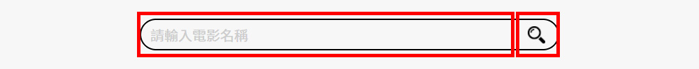
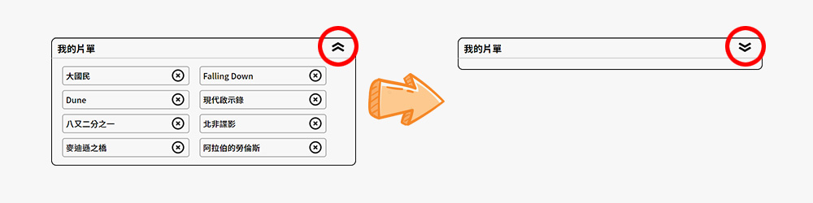
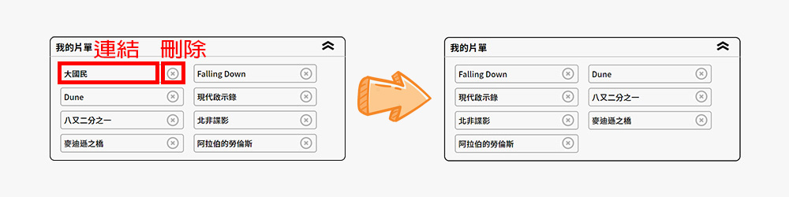
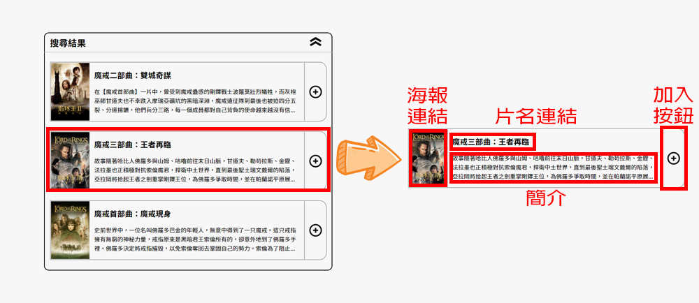

電影片單
透過AJAX請求「TMDB電影資料庫網站」的API搜尋資料，動態顯示於搜尋結果欄位。使用者可將搜尋結果個別增加到上方我的片單內，並離線保存，於下次開啟本網頁時仍保存著電影片單。
使用工具
 HTML
HTML CSS
CSS JavaScript
JavaScript- jQuery
透過AJAX請求「TMDB電影資料庫網站」的API搜尋資料，動態顯示於搜尋結果欄位。使用者可將搜尋結果個別增加到上方我的片單內，並離線保存，於下次開啟本網頁時仍保存著電影片單。
建立一個搜尋欄位，讓使用者可以輸入電影名稱與點擊搜尋按鈕。
建立<form>表單來放置搜尋欄<input>與搜尋按鈕<button>。
<form class="searcharea" action="search" autocomplete="off">
<input type="search" id="searchtext" placeholder="請輸入電影名稱">
<button type="button" id="searchbtn"></button>
</form>
.searcharea {
display: flex;
justify-content: space-between;
box-sizing: border-box;
border: 2px solid #000;
border-radius: 100px;
}
.searcharea>input,
.searcharea>button {
padding: 5px 10px;
border: none;
background-color: transparent;
}
input:focus,
button:focus {
outline: none;
}
.searcharea>input {
width: 100%;
font-size: initial;
}
.searcharea>input::placeholder {
color: #ccc;
}
.searcharea>button {
width: 50px;
color: transparent;
background-image: url('../images/icon/search.png');
background-repeat: no-repeat;
background-size: 20px 20px;
background-position: center;
}
建立兩個區塊，分別用來存放電影片單與搜尋結果，並設定摺疊按鈕，讓使用者可以收摺內容區塊。
建立<input type="checkbox">標籤來控制收摺狀態，並將一個<label>標籤作為按鈕來控制
<div class="foldarea">
<input type="checkbox" name="" class="fold_control" id="mylist_fold">
<label class="foldbtn" for="mylist_fold">收摺</label>
<h3>我的片單</h3>
<div class="moviecontent">
<ul class="allmymovies">
</ul>
</div>
</div>
透過CSS控制摺疊功能，並加入收摺的動態效果
.fold_control {
position: absolute;
opacity: 0;
z-index: -1;
}
.fold_control:checked~.moviecontent {
height: 0;
}
.fold_control:checked~.moviecontent>ul {
transform: translateY(-100%);
}
.fold_control:checked~.foldbtn {
transform: scaleY(-1);
}
.foldbtn {
position: absolute;
right: 0;
box-sizing: border-box;
border-radius: 5px;
margin-top: 7px;
margin-right: 10px;
width: 50px;
color: transparent;
user-select: none;
background-image: url('../images/icon/fold.png');
background-repeat: no-repeat;
background-size: 50% 80%;
background-position: center;
}
.moviecontent {
overflow: hidden;
}
.moviecontent>ul {
transform: translateY(0);
transition: 1s;
}
存放電影名稱與「TMDB」電影網頁的連結，並加入可以從片單區刪除此電影的按鈕。
建立<ul>標籤來存放每一部電影，每個<li>標籤包括連結網址與刪除按鈕。
<ul class="allmymovies">
<li class="mymovie">
<a href="https://www.themoviedb.org/movie/15">大國民</a>
<button type="button" class="deletemovie"></button>
</li>
</ul>
ul.allmymovies {
display: flex;
justify-content: flex-start;
flex-wrap: wrap;
}
li.mymovie {
display: flex;
justify-content: space-between;
box-sizing: border-box;
width: 250px;
margin: 5px 10px 5px;
border: 2px solid #aaa;
border-radius: 5px;
}
li.mymovie>a {
display: -webkit-box;
padding: 5px;
text-align: left;
text-decoration: none;
width: 100%;
color: #000;
font-size: 1em;
font-weight: 500;
text-overflow: ellipsis;
-webkit-line-clamp: 1;
-webkit-box-orient: vertical;
overflow: hidden;
}
li.mymovie>button {
width: 50px;
border: none;
background-color: transparent;
background-image: url('../images/icon/delete.png');
background-repeat: no-repeat;
background-size: 60%;
background-position: center;
}
存放請求「TMDB API」搜尋的結果，包含海報圖片、網頁連結、電影名稱、電影簡介，以及點擊後可以加入片單的按鈕。
建立<ul>標籤來存放每一部電影，每個<li>標籤包括海報區、文字內容與刪除按鈕。
<ul class="allresultmovies">
<li class="resultmovie">
<a href="https://www.themoviedb.org/movie/122">
<img src="https://image.tmdb.org/t/p/w200/AeCzdIZYJIrzl7iaTtQYjPPnPED.jpg">
</a>
<div class="movieinfo">
<a href="https://www.themoviedb.org/movie/122">魔戒三部曲：王者再臨</a>
<p>故事隨著哈比人佛羅多與山姆、咕嚕前往末日山脈，甘道夫、勒苟拉斯、金靂、法拉墨也正積極對抗索倫魔君，捍衛中土世界...。</p>
</div>
<button type="button" class="addmovie"></button>
</li>
</ul>
li.resultmovie {
display: flex;
box-sizing: border-box;
width: 100%;
margin: 20px auto;
border: 2px solid #aaa;
border-radius: 0 15px 15px 0;
}
li.resultmovie>a {
width: 25%;
}
li.resultmovie>a::before {
content: "";
display: inline-block;
height: 100%;
vertical-align: middle;
}
li.resultmovie>a>img {
display: inline-block;
max-width: 100%;
height: auto;
vertical-align: middle;
}
li.resultmovie>div {
box-sizing: border-box;
width: 60%;
margin: auto 10px;
text-align: left;
vertical-align: middle;
}
li.resultmovie>div>a {
display: -webkit-inline-box;
text-align: left;
text-decoration: none;
color: #000;
font-weight: 700;
text-overflow: ellipsis;
-webkit-line-clamp: 1;
-webkit-box-orient: vertical;
overflow: hidden;
}
li.resultmovie>div>p {
display: -webkit-box;
box-sizing: border-box;
margin-top: 10px;
font-size: 0.4em;
line-height: 1.6;
text-overflow: ellipsis;
-webkit-line-clamp: 3;
-webkit-box-orient: vertical;
overflow: hidden;
}
li.resultmovie>button {
width: 15%;
color: transparent;
border: none;
border-left: 2px solid #aaa;
background-color: transparent;
background-image: url('../images/icon/add.png');
background-repeat: no-repeat;
background-size: 60%;
background-position: center;
}